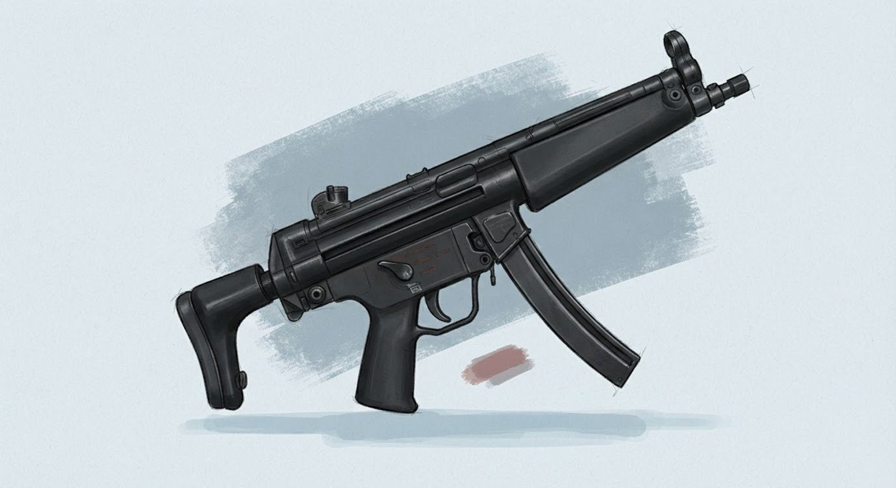
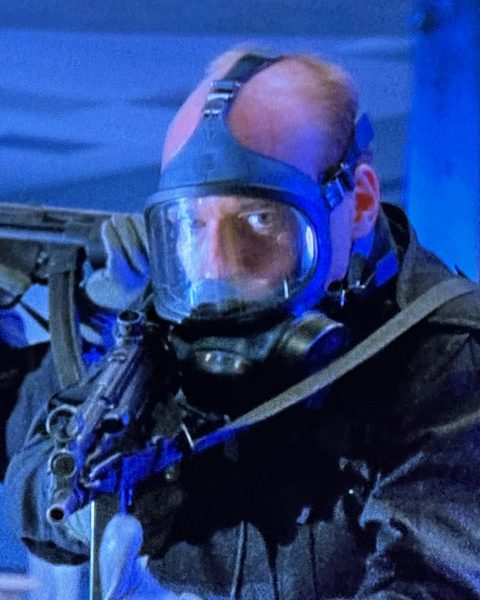

▦ 4 photos · ▶ 2 videosWeapon / Firearms
MP5
The submachine gun of Gruber’s crew in Die Hard (1988).
First seenDie Hard, 1988
On setOften HK94s dressed as MP5s
Key sceneMcClane takes an MP5 off a dead terrorist and sends him down in the elevator with a note.
Gallery
Appears in


Predator 2
Predator 2
1990 · IMDb
Terminator 2
Terminator 2
1991 · IMDb

Who carries it

Gruber’s crew
The Nakatomi heist team

Dutch’s team
The commando rescue squad

SWAT team
The officers at the Cyberdyne siege

More weapons
See all
Beretta 92F
3 photos · 2 videos
Die Hard · 1988 · John McClane, John Matrix, Joe Cox, T-1000 & Gregori

12-Gauge Auto-Loader
3 photos · 3 videos
The Terminator · 1984 · The Terminator

.45 Longslide
4 photos · 3 videos
The Terminator · 1984 · The Terminator

Uzi 9mm
4 photos · 3 videos
The Terminator · 1984 · The Terminator